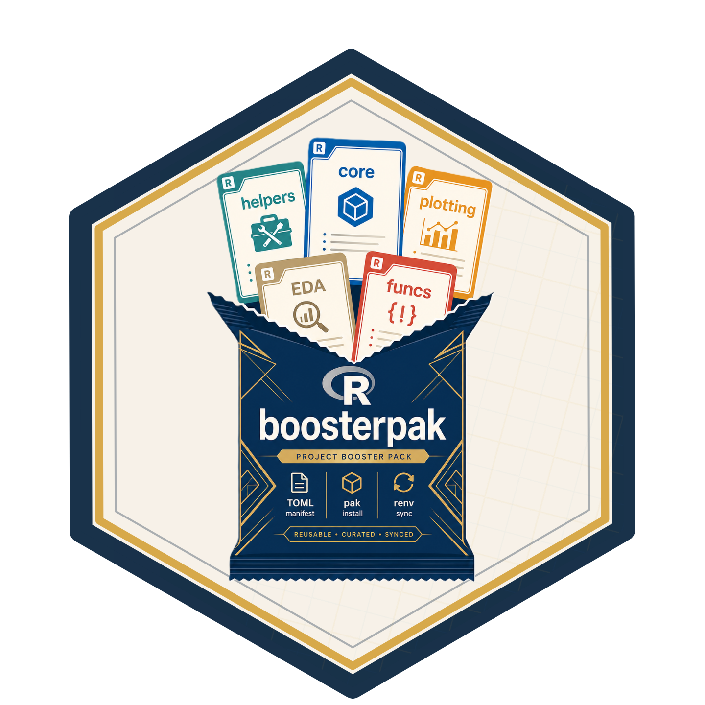

boosterpak installs reusable R project packs: typed bundles of package dependencies, optional source specs, startup attachment intent, and helper-function sidecars that make a project usable without turning it into a package. It is less than a package, but more than a fistful of copied files.
boosters.toml is the project-local control file for those packs. It is not a general dependency-manifest standard and boosterpak does not depend on one. pak remains the installer, renv remains the lockfile and default project-library layer, and boosterpak sits above them as a small capability-bundle layer for reusable setup conventions. Existing projects can instead apply packs to an active user or site library without creating a project-local renv environment.
Use boosterpak when the reusable thing is not just “these packages”, but “these packages plus the helper functions, attachment choices, and setup conventions that make this kind of project ready to work in.”
1. Install pak
install.packages("pak")2. Install boosterpak
pak::pkg_install("seanthimons/boosterpak")3. Initialize the project
For a project stored in OneDrive or another synchronized folder, keep its device-specific package library outside the project. Open the user-level .Renviron file:
file.edit(path.expand("~/.Renviron"))Add this line on Windows, then fully restart R:
RENV_PATHS_LIBRARY_ROOT="${LOCALAPPDATA}/R/cache/R/renv/library"Confirm the path before initialization:
renv::paths$library(project = ".")renv adds project-, platform-, and R-version-specific directories beneath that root. The package library therefore stays local to the device, while the small renv/ bootstrap directory and renv.lock remain with the project so it can be restored elsewhere. Keep library = "renv" in boosters.toml; no boosterpak-specific path setting is required. Do not relocate the bootstrap directory with RENV_PATHS_RENV, because boosterpak expects renv/activate.R inside the project. See the renv path documentation for other platforms and path controls.
boosterpak::init(renv = "yes", rprofile = "yes")init() writes boosters.toml, creates boosters/packs/, optionally writes air.toml, manages the recommended .Rprofile startup hook, and can initialize project-local renv. It also upgrades default-like CRAN mirrors to use Posit Package Manager for faster binary installs when available, including @CRAN@, common CRAN cloud mirrors, and mirrors listed in options(boosterpak.default_cran_mirrors = c(...)) or BOOSTERPAK_DEFAULT_CRAN_MIRRORS; matching .Rprofile repository setup is written when rprofile = "yes". On glibc Linux, that setup also switches to Posit’s portable Linux binaries so distributions Package Manager does not list, such as Fedora, install binaries instead of compiling from source; see Linux Binary Packages. The startup setup also enables the renv pak backend and sets install.packages.compile.from.source = "never". The install-policy lines are written on every platform, but that compile option only takes effect where R installs binary packages by default, which is Windows and macOS; on Linux it has no effect. With renv = "yes", init() bootstraps renv, pak, and boosterpak into the project library and snapshots those workflow packages before any restart is needed.
On a project that already has boosters.toml, init() does not overwrite it. Use upgrade_project() to bring an existing project up to date; see Upgrading an existing project.
4. Sync the project
boosterpak::sync()Upgrading an existing project
Projects created by an earlier boosterpak version need one upgrade run. Install the new boosterpak, restart R, confirm the version the session loads, preview the upgrade, then apply it:
pak::pkg_install("seanthimons/boosterpak")
packageVersion("boosterpak")
boosterpak::upgrade_project(dry_run = TRUE)
boosterpak::upgrade_project()upgrade_project() installs missing packages and writes renv.lock. The dry run is the read-only step: it changes no files, installs nothing, and prints the planned actions, a lockfile preview, and the files a real run would touch. Interactive sessions print the report; in a script, pass verbose = TRUE.
A real run touches these files:
-
.Rprofile: the managed startup lines are repaired. Layouts from earlier versions, including the single unmarked hook line and older managed blocks, are replaced by the current managed block, and the repository lines are rewritten to match the current policy. -
boosters/attach.R: regenerated fromboosters.toml. -
boosters/packs/: the built-incorepack and any missing declared pack files are copied in. Existing files are not overwritten. - The project renv library: any of
renv,pak, andboosterpakthat are missing are installed. -
renv.lock: rewritten by a snapshot of those three packages and their dependencies. Useupgrade_project(snapshot = FALSE)to repair the files and install the missing packages without writing the lockfile. -
renv/activate.R: rewritten by renv only when the snapshot records a new renv version. -
boosters.toml: only the[project].boosters_versionfield, set to the installed boosterpak version. See boosters_version.
If the project renv is not loaded yet, the upgrade loads it first and reapplies the boosterpak repository and install settings for the session.
The lockfile preview shows the R version and the CRAN repository URL, old to new, and the workflow packages and dependencies whose locked version differs from the installed one. The preview is approximate; renv writes the final records. The snapshot records the R version that runs the upgrade, so run it from the R version the project should pin. Packages installed from Posit Package Manager binaries can carry Repository: RSPM and a Platform field. renv’s restore does not read Platform, and RSPM is only a preference: restore falls back to the repository URLs in renv.lock, which also serve Windows and macOS binaries.
Review the result with git diff before committing. To undo a change you did not intend, restore the file with git restore. For a new untracked file that the report lists, such as boosters/packs/core.toml, check the path with git clean -n -- <path> and then remove it with git clean -f -- <path>; use only the paths the report lists. Packages installed into the project library stay there; they do not change your project files.
What init() does on an existing project
init() is for new projects. On an existing one it makes smaller changes and does not write the upgrade report:
- It leaves
boosters.tomlin place. It addsboosterpakto[extras].declaredwhen that is a single generated line, and it removes the legacyparallel_daemons = "auto"setting. - It writes
air.tomlonly when it is missing and the air setting is on. - It copies in missing pack files, and never overwrites an existing manifest.
- With
renv = "yes", it loads or creates the project renv, installs missingpak,renv, andboosterpak, and snapshots them unless[settings].auto_snapshotisfalse. - It updates the managed
.Rprofilelines. It records the installed boosterpak version inboosters_versiononly when that.Rprofilestep ran, sorprofile = "no"leaves the record unchanged.
boosters_version
[project].boosters_version in boosters.toml records the boosterpak version that the project was last migrated with. Two commands write it:
-
init(), once its.Rprofilestep has run. -
upgrade_project(), after a real run that reports no warnings. A dry run writes nothing. A run that stops with an error, or that reports a warning, leaves the record as it was. Most skipped steps are reported asINFOlines and do not stop the record, but a run that could not repair the workflow packages because renv is not installed reports a warning, so it does not record the version. Install renv and rerun.
sync() does not change it. The record never moves to an older version, and it is a record, not a lock. status() warns when the record is older than the installed boosterpak. A missing record is reported as “no version recorded” without a warning, and upgrade_needed is still TRUE. A project created with rprofile = "no" has no record until an init() completes the .Rprofile step or a clean upgrade_project() run writes it.
Linux binary packages
CRAN publishes only source packages for Linux. Posit Package Manager builds Linux binaries from them, but serves them from distribution-specific URLs such as https://packagemanager.posit.co/cran/__linux__/jammy/latest, which exist only for the distributions Package Manager lists. The generic URL (https://packagemanager.posit.co/cran/latest) serves source, so on other glibc distributions, for example Fedora, every package installs from source.
Posit’s portable Linux binaries (manylinux_2_28) fix that with one binary build for all glibc distributions. On glibc Linux, boosterpak rewrites every Package Manager repository URL in repos (and in renv.config.repos.override) that has this form:
https://packagemanager.posit.co/cran/latest
-> https://packagemanager.posit.co/cran/__linux__/manylinux_2_28/latestPackage Manager only serves binaries from __linux__ URLs to clients that identify as R, so boosterpak also sets options(HTTPUserAgent = ...). If you use the "curl" or "wget" download method, which ignore HTTPUserAgent, it also appends the matching User-Agent header to options(download.file.extra). An existing download.file.extra is kept, and a header that is already there is not duplicated.
What is written where
- The
.Rprofilerepository lines keep the generic URL, so one.Rprofilestill works on Windows, macOS, and Linux, and non-Linux machines keep using the generic URL. - A guarded line after them performs the rewrite on glibc Linux only, when R starts. It uses base R, because it runs before boosterpak loads.
- A second copy of the guarded lines follows the
renv/activate.Rline. renv’srenv::load()resets the repositories to the lockfile URLs, which would undo the first rewrite, so the rewrite is re-applied after activation. Every session that activates the project, including each worker, gets the rewritten URLs. The re-applied lines are written only where the repository lines are, and they are marked so boosterpak can find and replace them. The first of them replaces a default CRAN mirror with the Package Manager URL, as described below. It runs only while renv’s Package Manager handling is on, which it checks with the internalrenv:::renv_ppm_enabled(). With that handling off,renv::snapshot()does not strip the__linux__segment, so the line is skipped and the lockfile stays generic. - Distribution-specific URLs, such as
.../cran/__linux__/noble/latest, and repositories that are not Package Manager repositories are left alone. - A
renv.lockthat still lists a default CRAN mirror, such ashttps://cran.rstudio.com, no longer keeps the session on that mirror. Afterrenv::load()setsreposfrom the lockfile, the re-applied block checks theCRANentry ofrepos, and ofrenv.config.repos.overridewhere the project sets it. If the entry is one of the built-in default mirrors (@CRAN@,https://cloud.r-project.org,https://cran.rstudio.com, orhttps://cran.r-project.org, compared without regard to case or a trailing slash), the Package Manager URL that the session was configured with is put back. That is normallyhttps://packagemanager.posit.co/cran/latest.install.packages()andpakthen use Package Manager, which serves binaries where it has them. Custom mirrors and non-CRAN repositories are left alone. The restore applies only where the.Rprofilerepository lines name a Package Manager URL, and it is skipped whenBOOSTERPAK_CONFIGURE_REPOSITORIESturns repository setup off or when renv’s Package Manager handling is off.renv::restore()andrenv::install()still userenv.config.repos.override. - Unlike the Linux rewrite, the CRAN restore runs on every OS, so a lockfile does not flip between the mirror and the Package Manager URL when collaborators use different systems. This is a behaviour change for Windows and macOS sessions too: where the restore applies, a snapshot now records the generic Package Manager URL instead of the default mirror. Set
BOOSTERPAK_CONFIGURE_REPOSITORIES=falseto turn the restore off for a session. - The marker comment above the re-applied block in
.Rprofilestill says “Linux”, although the CRAN restore line is active on every OS. An older boosterpak’sdeinit()removes the marker and, at most, the Linux line right after it. On a file written by this version, it can leave the CRAN restore line and the Linux line behind, so delete them by hand or run this version’sdeinit(). - To put the Package Manager URL into the lockfile itself, run
upgrade_project(). On a real run withsnapshot = TRUEit writes the URL unless repository configuration is disabled or a custom CRAN mirror is set; check the lockfile preview of a dry run first. You can also record a Package Manager repository yourself withrenv::snapshot(repos = ...). -
init()andupgrade_project()replace the repository lines written by earlier boosterpak versions, so existing projects upgrade by running either one.
When it applies
- R runs on glibc Linux, meaning
R.version$osis"linux-gnu". That is the only thing boosterpak checks. musl systems such as Alpine report"linux-musl"and are skipped. - The binaries themselves are built on RHEL 8 for x86_64 and ARM64 and need glibc 2.28 or newer (check with
ldd --version). boosterpak does not test for this, so on an older or unusual system setBOOSTERPAK_CONFIGURE_REPOSITORIES=false(see “Opt out”). - A repository URL looks like
<host>/<repo>/latestor<host>/<repo>/<YYYY-MM-DD>, with no trailing slash, on a recognized host:packagemanager.posit.co,packagemanager.rstudio.com, orp3m.dev. - For a self-hosted Package Manager, boosterpak also recognizes the host of
BOOSTERPAK_PPM_REPOand any hosts inBOOSTERPAK_PPM_HOSTS(separated by commas, semicolons, or spaces) oroptions(boosterpak.ppm_hosts = c(...)). The server must havemanylinux_2_28enabled, or installs fail with 404 errors. The host list is written into the.Rprofileline when it is generated, so a team should agree on one list, for example in the project’s.Renviron, to avoid regenerating a different line for each person.
Things to know
- Portable Linux binaries are a public preview from Posit.
- Binaries bundle the system libraries they need. Each package carries a software bill of materials (
sbom.cdx.json) and aBuilt/SystemLibsfield in itsDESCRIPTION. An installed package does not update its bundled libraries, so to pick up a security fix in one of them, reinstall the package from a repository snapshot that contains the rebuilt binary. - When Package Manager has no binary for a package, it serves the source package without an error.
-
download.file.extrais only set ifdownload.file.methodis already"curl"or"wget"when the managed line runs, so set the method earlier in.Rprofileor inRprofile.site. A user agent passed through curl’s-Aor wget’s-Uis not detected, so keep it out ofdownload.file.extra. - Package Manager serves packages through a redirect, and R’s
"curl"method does not follow redirects on its own (it needs-L), so it saves the redirect page instead of the package and installs fail. Posit recommendsoptions(download.file.extra = "-fsSL")for"curl". boosterpak adds only the user agent header, never curl flags. Set your own flags earlier in.Rprofilethan the managed block, and boosterpak appends the header after them. A later assignment replaces the header.
Check that binaries are served
boosterpak::check_binary_repos()check_binary_repos() requests one small package (cli by default) from each Package Manager repository, with the session’s user agent, and reports the X-Package-Type and X-Package-Binary-Tag headers. It warns for any repository that serves source and suggests the likely fix. It also warns when download.file.method is "curl" and download.file.extra has no -L: the check uses libcurl, which follows redirects, so it can pass while curl installs fail. It needs network access and runs on Linux only.
During an install, a binary shows up in the log as * installing *binary* package 'cli' ..., while a source install says * installing *source* package 'cli' ....
Pinned versions and snapshots
A project restores the versions recorded in renv.lock, not the newest ones. Package Manager serves a binary only for a version that exists in the snapshot the URL points at. A pinned version that the repository does not serve for that URL installs from source, even when the URL is correct. To check a lockfile:
boosterpak::check_binary_repos(lockfile = "renv.lock")This downloads each repository’s package index once and installs nothing. It reports how many pins are available as binary and how many would compile, and it warns with the worst offenders, compiled packages first. It only checks repositories that are recorded in the lockfile and that are Package Manager repositories. Add snapshot_dates = "2026-10-14" to check whether a dated snapshot serves more of the pins. The per-date counts print in interactive sessions or with verbose = TRUE; they are always in the snapshots element of the "lockfile" attribute of the result.
When pins are not available as binary, choose one of three options:
-
Relax the pins. Run
renv::update(), test the project, then runrenv::snapshot(). The package versions in the project change, which can break code that depends on the old versions. -
Point the lockfile at a dated snapshot. Use this when a dated Package Manager URL serves the pinned versions.
snapshot_datesabove shows whether it does. In.Rprofile, change both repository lines that boosterpak writes,options(repos = ...)andoptions(renv.config.repos.override = ...), so that each names the dated URL, such ashttps://packagemanager.posit.co/cran/2026-10-14. Restart R, runrenv::restore(), then runrenv::snapshot(). Both lines must change.renv::restore()reads therenv.config.repos.overrideoption and not the lockfile, so a generic override would restore from the generic URL.renv::snapshot()records thereposoption inrenv.lock, so a genericreposwould write the generic URL back.init()andupgrade_project()rewrite both lines from the options in the running session, so after either one, check that both lines still name the dated URL. The project then depends on that date, so record the choice and review it when you update packages. - Accept compiling. Install from source. Installs are slower, and the system needs compilers and headers for packages with C, C++, or Fortran code.
The “loaded before renv activated” warning
Some systems print this message when a project starts:
The following package(s) were loaded before renv activated this project:The message comes from renv, not from boosterpak. A system-wide R profile loads a package before the project’s renv/activate.R runs. On Fedora, for example, a CoprManager setup can do this. The warning is harmless when the packages are the ones you expect, and it does not mean the project is broken.
To silence it, set RENV_CONFIG_NAMESPACES_CHECK=FALSE in your user-level ~/.Renviron and restart R. The equivalent is options(renv.config.namespaces.check = FALSE) in your user-level ~/.Rprofile. Use the user-level files rather than the project’s, so the setting does not travel with the project.
boosterpak deliberately does not silence the warning in the project. The check also flags a package loaded from outside the project library, which can be a real inconsistency, and a project-level setting would hide that for everyone who opens the project.
Opt out
Set BOOSTERPAK_CONFIGURE_REPOSITORIES=false (for example in ~/.Renviron) to stop boosterpak from changing repository settings. The managed .Rprofile line also checks it, so the Linux rewrite stops in projects that already contain the line, without editing them. Repository lines already in .Rprofile keep pointing at the generic Package Manager URL, so distributions Package Manager does not list go back to compiling from source.
options(boosterpak.configure_repositories = FALSE) stops boosterpak’s own repository configuration in the R session, which runs in init(), upgrade_project(), and the renv restore and bootstrap steps. It does not affect a line that is already in .Rprofile. If both are set, the environment variable wins.
With repository setup opted out but install-policy setup still on, upgrade_project() removes the managed repository lines from .Rprofile, because boosterpak then has no repository setup to write back. The install-policy lines are kept. init() does the same when the install-policy lines are missing. If install-policy setup is opted out as well, neither command writes or removes setup lines. To keep the repository lines, do not run either command while opted out.
GitHub rate limits
Installs from GitHub use the GitHub API. Anonymous requests share a rate limit of 60 requests per hour per IP address. The limit matters in two places:
- Installing boosterpak from GitHub.
init(),sync(), andupgrade_project()install it only when it is missing from the project library. - Packs that install from GitHub, such as the
github-examplepack, which installsComptoxR, and[sources]entries likewilkelab/ggtext.
When a rate limit stops an install, boosterpak appends a hint to the error. init() and sync() stop with the error and the hint. upgrade_project() does not stop: it reports the failed install as a WARNING: workflow package install skipped line with the hint appended. The rest of the run finishes, but it writes no renv.lock and does not record boosters_version. An HTTP 403 or 429 from GitHub that may be a rate limit gets the same hint, with the first line GitHub may have rate-limited or refused the request. The hint looks like this for an explicit rate limit, after the GitHub error text:
GitHub rate limit reached.
Anonymous GitHub API requests share a limit of 60 requests per hour per IP address.
No GitHub token is set (GITHUB_PAT or GITHUB_TOKEN).
Set a token for the R session, then rerun. From a shell where the GitHub CLI is logged in:
export GITHUB_PAT=$(gh auth token)
Or store one for your user account with gitcreds::gitcreds_set() or GITHUB_PAT in ~/.Renviron.The hint reports only whether a token is already set. It never prints a token value. Supply a token in one of three ways:
-
For one shell session. From a shell where the GitHub CLI is logged in, run
export GITHUB_PAT=$(gh auth token), or start R for one process withGITHUB_PAT=$(gh auth token) R. -
Stored for your user account. Run
gitcreds::gitcreds_set()once in R, and paste a token when asked. This needs thegitcredspackage. -
In your user-level
~/.Renviron. Add a lineGITHUB_PAT=followed by the token, then restart R.
Never commit a token. Keep it out of the project: not in .Renviron, .Rprofile, boosters.toml, scripts, or the README. A user-level file is the right place, because it is never part of the project’s version control.
Safely deinitialize a project
Run boosterpak::deinit() interactively to choose from the project components that currently have something to clean up. The console picker preselects every actionable component, then a final confirmation shows the exact paths and .Rprofile changes before anything is modified.
For automation, select components explicitly and use force = TRUE:
boosterpak::deinit(
renv = TRUE,
boosters = TRUE,
rprofile = TRUE,
lockfile = TRUE,
air = TRUE,
force = TRUE
)Selectors are independent. For example, deinit(boosters = FALSE, renv = FALSE, lockfile = TRUE) removes only renv.lock after confirmation. Removing renv/ while setting rprofile = FALSE deliberately retains its activation line and reports that choice.
deinit() never deletes .Rprofile; it removes only recognized boosterpak managed content and, when selected with renv = TRUE, a whole-line renv activation expression. It preserves malformed managed markers, unrelated user code, user/global packs, session options and libraries, and any edited or ownership-unknown air.toml. Non-interactive destructive calls require force = TRUE, while a genuine no-op returns without prompting.
When RENV_PATHS_LIBRARY_ROOT places the package library outside the project, the renv selector still removes only the project-local renv/ bootstrap directory. It deliberately leaves the external package library untouched. If the project renv is active, deinit() reports restart_required = TRUE and warns you to restart R; it does not rewrite the current session’s library paths.
Use an active library without a project renv
For a live project that should keep using its existing R libraries, initialize without creating a project-local renv environment:
boosterpak::init(renv = "no", rprofile = "yes")Then select the persistent active-library strategy in boosters.toml:
boosterpak::sync() and eager pack mutations will now detect and install packages in the first writable entry of .libPaths(). Package source overrides, helper functions, and boosters/attach.R work normally. Active-library apply mode skips renv::hydrate() and renv::snapshot(); it does not create renv/ or renv.lock. For a one-off override without editing TOML, use boosterpak::sync(library = "active") or boosterpak::add_pack("eda", library = "active").
The renv package remains an installation dependency because lockfile restore support is part of boosterpak, but no project-local renv environment is activated in this mode. sync(mode = "restore") remains the separate renv lockfile workflow.
Typical workflow
flowchart TD
A([Start new project]) --> B(["Run init()"])
B --> C([Declare reusable capability])
C --> D(["Run add_pack()"])
C --> E(["Run add_function()"])
D --> F(["Run sync()"])
E --> F
F --> G[Hydrate from local libraries]
G --> H[Install remaining with pak]
H --> A1[Write boosters/attach.R]
A1 --> I[Snapshot declared packages]
F --> J[Helper files copied into boosters]
I --> K([Edit code and helper files])
J --> K
K --> L(["Run save_pack()"])
L --> M[Flat package pack or nested function pack]
M --> N(["Run promote_pack()"])
N --> O(["Reuse with add_pack() in another project"])
O --> D
classDef userAction fill:#e8f3ff,stroke:#1f6feb,color:#0b1f3a;
classDef packageAction fill:#f6f8fa,stroke:#6e7781,color:#24292f;
class A,B,C,D,E,F,K,L,N,O userAction;
class G,H,A1,I,J,M packageAction;The usual loop is to initialize once, add packs and helper functions as project capability intent, run sync(), then capture a useful baseline with save_pack(). Additive installs hydrate plain-name packages from local/user libraries before downloading, install any remaining packages with pak, and write boosters/attach.R for startup library() calls. Package-only packs stay flat at boosters/packs/<name>.toml; packs that carry copied helper files use boosters/packs/<name>/<name>.toml plus boosters/packs/<name>/functions/. For an already initialized repo clone, do not re-run init(); follow the restore path with renv::restore(), restart R, then boosterpak::sync(mode = "restore").
A pack is deliberately typed and reviewable. Today that means packages, optional [sources], optional attach and attach_mode, optional copied helper functions, and optional extension from other packs. It is not an arbitrary file sprinkler; project-specific mess stays in the project, and only reusable setup invariants belong in a pack.
Add a pack
boosterpak::add_pack("example")The built-in pack catalog contains:
-
core: minimal bootstrap dependencies,pakandrenv. -
databases: database workflow packages includingDBI,dbplyr,duckdb,RSQLite,odbc,connections, and a DuckDB RStudio connection-pane option helper. -
eda: analysis helpers includingfs,here,janitor,rio, core tidyverse packages,scales,glue,digest,skimr, and bundled helper functions. -
example: small documented example that installscli. -
scaffold-analysis: installsfsandhereand carries a helper for a compact analysis folder scaffold. Its packages attach only in interactive sessions (attach_mode = "interactive"). -
github-example: installsComptoxRfromseanthimons/ComptoxR.
Packs can mix ordinary CRAN package names with source-specific install specs. Declare every package in packages, then add a [sources] entry only for packages that should come from somewhere else:
name = "plotting"
description = "Plotting packages from CRAN and GitHub."
packages = ["ggplot2", "patchwork", "ggtext"]
[sources]
"ggtext" = "wilkelab/ggtext"In this pack, ggplot2 and patchwork install by package name, while ggtext uses the GitHub source spec.
Attachment is separate from installation. Missing attach means a pack attaches its direct packages; packs can also use attach = true, attach = false, or attach = ["pkg1", "pkg2"]. The top-level [attach] table can add packages with declared, remove packages with exclude, or set enabled = false to remove the managed boosters/attach.R file. Workflow packages from core and [extras], such as pak, renv, and boosterpak, are installed but not attached unless explicitly listed in [attach].declared.
A pack can also set attach_mode = "interactive" (the default is "always"). Its packages still install, but they attach only when R is interactive, so worker processes and non-interactive runs skip them. Put the key above the first table header in the pack file ([sources], [settings], [hooks]). A key written below a table header belongs to that table, so boosterpak does not read it as a pack key. A package that another pack or [attach].declared also requests without the interactive mode still attaches on every start, and [attach].exclude still removes a package. Packages that a pack inherits through extends keep the mode of the pack that declares them. See “Startup cost and workers” below.
Pack mutation is additive. Removing a pack updates boosters.toml and can run sync, but it does not uninstall packages.
With the default library = "renv" strategy, add_pack() and sync(mode = "apply") use hydrate = TRUE, so ordinary CRAN-style package names can be copied from renv-discoverable local libraries before pak downloads anything. Source-specific declarations, such as GitHub remotes in [sources], skip hydration and install through their declared spec. Use hydrate = FALSE for stricter first-run installs that should go straight to pak. The library = "active" strategy installs directly into the selected active library and ignores hydration.
Add one-off packages alongside packs
boosterpak manages packs. For individual packages that don’t belong to any pack, use pak or renv directly:
pak::pkg_install("concert")After installing, snapshot so renv.lock records the new package:
renv::snapshot()Subsequent boosterpak::sync() and boosterpak::add_pack() calls preserve every package already recorded in renv.lock, so one-off installs are not lost when packs are added or synchronized later. The typical sequence for a new project is:
boosterpak::init(renv = "yes", rprofile = "yes")
boosterpak::add_pack("eda")
# one-off package, then snapshot it into the lockfile
pak::pkg_install("concert")
renv::snapshot()
# future pack additions preserve concert in renv.lock
boosterpak::add_pack("databases")Packages installed directly are not attached at startup by boosters/attach.R. To attach them, add the package name to [attach].declared in boosters.toml:
Startup cost and workers
The project’s .Rprofile runs whenever R starts in the project, and it sources boosters/attach.R. Worker processes count too. A targets pipeline that runs on crew starts its workers in the project directory, so each worker runs .Rprofile and attaches the packages in attach.R again at every spin-up. Every package attached adds to that cost.
To see what is attached, run boosterpak::status(). It lists each attached package with the pack that requested it (or [attach].declared), and prints attached on every R start (including workers): N packages. Packages from interactive-only packs are not in that count. They follow it on their own line, as M more only in interactive sessions, with the pack behind each one. In the returned value, attach_packages and attach_package_count still cover every attached package. attach_every_start_count counts the ones that attach on every start, attach_interactive_packages names the interactive-only ones, and the interactive column of attach_sources marks them.
To trim the list, use the narrowest option that does the job:
-
[attach] exclude = ["pkg"]stops a package from being attached. It is still installed. - In a pack,
attach = falseattaches nothing from that pack, andattach = ["pkg1"]attaches only the listed packages. - In a pack,
attach_mode = "interactive"keeps the pack’s packages installed and attaches them only when R is interactive. Workers and non-interactive runs skip them. -
[attach] enabled = falseremovesboosters/attach.Rentirely. Packages are still installed, and the helper functions still load. -
remove_pack("name")removes a pack fromboosters.toml, rewritesboosters/attach.R, and drops the pack’s[settings.packs.<name>]section when no remaining pack needs it. It does not uninstall anything. The packages stay inrenv.lockand the project library, and the function prints the next steps: runrenv::snapshot()to drop them from the lockfile, andrenv::remove()to uninstall them.
For a targets pipeline, list the packages the targets use in tar_option_set(packages = ...). Each worker then loads those packages for its targets, whatever attach.R contains. That keeps the pipeline working when attach trimming removes a package. It does not stop attach.R from running on workers, so trim attach as well when startup time matters.
Interactive-only packages are written to attach.R with the same guarded library() calls, inside an if (interactive()) block. interactive() is FALSE in Rscript, in a Quarto or knitr render (including RStudio’s Render button), and in targets, crew, and callr workers. Code that calls a function from such a package without a namespace prefix therefore works at the console and fails when a document renders or a pipeline runs. Write here::here() or fs::path() in code that must run everywhere.
The shipped scaffold-analysis pack uses attach_mode = "interactive". Its helper calls only fs:: functions, so workers do not need fs or here attached, and interactive sessions still get both. A project that already has its own copy of a pack keeps that copy, because add_pack() and sync() never overwrite files in boosters/packs/. A project created before this key existed therefore still attaches those packages on every start. To change that, add attach_mode = "interactive" above the first table header in the copy, or delete the copy and run boosterpak::sync() to copy the current pack again. Older boosterpak versions ignore the key and attach every package on every start.
attach.R handles a missing package on its own. Each package is attached separately, so one that is not installed does not stop the others. boosterpak prints one summary line that names the missing packages and suggests renv::restore(). The boosters/fn_*.R helper files are sourced regardless, so they still load when an attached package is missing.
Capture and reuse packs
boosterpak::create_pack("analysis", c("dplyr", "rstudio/pointblank"), attach = "all")
boosterpak::save_pack("project_baseline")
boosterpak::promote_pack("project_baseline")create_pack() writes a new pack from declared intent without adding it to boosters.toml, installing packages, or running sync(). Plain package names are written directly to packages; source-specific specs are preserved under [sources]. Use function_template = "yes" to create a nested pack layout with functions/fn_template.R for later manual helper authoring.
save_pack() writes a TOML snapshot of the currently resolved project packages and, by default, the helper functions listed in [functions].installed. Use functions = "all" to capture every boosters/fn_*.R file, functions = "none" for a flat package-only pack, from = "core" to fork one existing pack, or scope = "user" to write directly to the machine-wide user pack directory. promote_pack() and demote_pack() copy flat package-only packs as single files and nested function-bearing packs as whole directories.
Related tools and boundaries
boosterpak is intentionally narrow:
-
pakresolves and installs package specs. -
renvowns project libraries, lockfiles, and exact version restoration. -
boosterpakowns reusable project capability packs: dependencies plus the small helper files, attachment choices, and setup conventions that are too project-shaped for a package and too reusable for copy-paste.
That boundary is the point. boosterpak uses TOML for its own pack and project config, but it is not trying to be a general project requirements format.
Which setup should I use?
Several R tools track packages, R versions, or whole environments, and they work at different levels. boosterpak is a layer on top of renv and pak, which it requires. rv and uvr each manage the project library and lockfile themselves, so they are alternatives to that layer: a project uses boosterpak with renv, or uses rv or uvr, not both. rix works at the level of the whole system environment rather than the project library, and boosterpak does not use it. rig switches R versions on a machine and has no interaction with boosterpak. The choosing-a-setup article compares these tools with boosterpak in full.
The rows for renv, rix, rv, uvr, ir, and rig summarize Isabella Velásquez’s R Works post on {renv}, {rix}, rv, uvr, and ir. The boosterpak row is the maintainers’ own assessment; the post does not mention boosterpak.
| Tool | Use it when |
|---|---|
| renv | You want project-local packages with a lockfile, and you install packages the usual way, iteratively. It does not manage the R version. |
| rix | You need a reproducible environment that includes R and system dependencies, and you are willing to learn Nix. |
| rv | You want the packages declared in a config file up front, and the whole dependency graph resolved before anything installs. |
| uvr | You want one tool that pins both the R version and the packages, in one lockfile. |
| ir | A single script or Quarto document should carry its own requirements, with no project directory. |
| rig | You need several R versions installed on one machine. The post notes that rig has since gained project-management features. |
boosterpak (maintainers’ assessment) |
You want reusable packs of packages, helper functions, attach choices, and setup conventions, applied to projects on top of renv and pak. |
Restore from a lockfile
boosterpak::sync(mode = "restore")sync(mode = "apply") treats boosters.toml as reusable setup intent and renv.lock as downstream output. It may hydrate from local libraries before installing the remaining declared packages with pak, then writes boosters/attach.R before snapshot. sync(mode = "restore") is the explicit path for exact lockfile restoration and does not hydrate. For restoring a freshly cloned project on a new machine, see the “Restoring a project on a new machine” vignette: run renv::restore() first (on default settings it installs boosterpak itself from the lockfile), restart R, then boosterpak::sync(mode = "restore").
Emergency rescue
For an already-initialized boosterpak project with a broken .Rprofile, missing core pack files, or a lockfile that dropped renv, pak, or boosterpak, run the same repair as Upgrading an existing project. Preview it first:
boosterpak::upgrade_project(dry_run = TRUE)
boosterpak::upgrade_project()If boosterpak is absent from the project library, bootstrap enough tooling first, then run the upgrade:
if (!requireNamespace("renv", quietly = TRUE)) install.packages("renv")
renv::load()
renv::install("seanthimons/boosterpak")
boosterpak::upgrade_project(dry_run = TRUE)
boosterpak::upgrade_project()upgrade_project() repairs existing boosterpak projects only; it expects boosters.toml to already exist. It rewrites the managed startup setup, reapplies the Posit Package Manager repository policy (including the Linux binary rewrite, and replacing the managed lines written by earlier versions), enables the renv pak backend, and installs missing workflow packages. Its internal helper, boosterpak:::.rescue(), does the same work; use upgrade_project() instead of calling the helper directly.
Troubleshooting 0.5 init projects
If a project was initialized with boosterpak 0.5 and a restart made boosterpak unavailable inside renv, follow the bootstrap recipe under “Troubleshooting: boosterpak absent from the lockfile” in the “Restoring a project on a new machine” vignette (vignettes/restoring-a-project.qmd).
Inspect status
boosterpak::status()
boosterpak::list_packs()status() reports config validity, declared and resolved packs, package counts, missing direct packages, the attached packages with the pack behind each one (and which of them attach only in interactive sessions), boosters/attach.R presence, function drift or missing materialized files, pack catalog counts, renv state, lockfile presence, and the .Rprofile hook. It also:
- warns when the installed boosterpak is newer than the
boosters_versionrecord. A missing record is reported as “no version recorded” without a warning. To act on a warning, runupgrade_project(dry_run = TRUE)first, thenupgrade_project(). - prints a Linux hint to run
check_binary_repos(lockfile = "renv.lock")whenrenv.lockexists. - reports whether a GitHub token is visible, as
TRUEorFALSEonly, when the project declares GitHub sources. It never prints the token.
It does not use the network. To confirm that Package Manager is serving binaries rather than source, run boosterpak::check_binary_repos(); see Linux binary packages.
Current development includes function materialization, pack capture/promotion, and broader project status reporting; pruning remains out of scope.